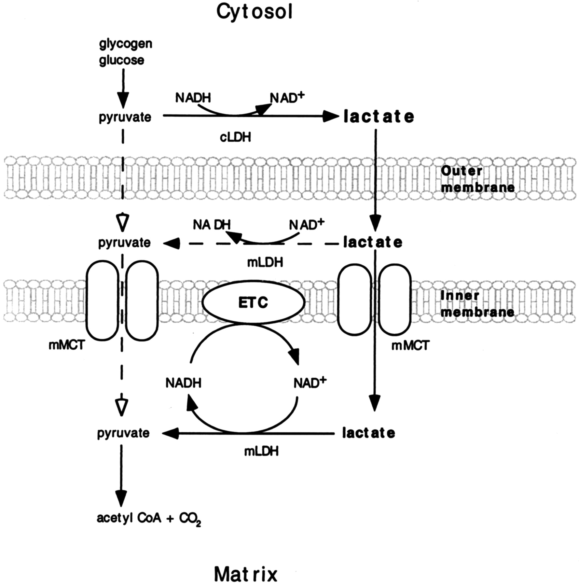

Current understanding of intracellular lactate metabolism places lactate dehydrogenase (LDH) on the external side of the inner mitochondrial membrane1, suggesting that lactate is not directly oxidised inside the mitochondrial matrix. However, recent evidence strongly suggests the presence of a stable matrix lactate pool. To re-examine the consequences of matrix LDH activity, I have adapted an existing in silico flux-balance analysis (FBA) metabolic model of the whole cell. The results show that mitochondrial LDH activity is metabolically advantageous at high ATP synthesis rates.
Direct mitochondrial lactate oxidation was proposed by in George Brooks in 19992. In that paper, mitochondria isolated from rat liver, skeleal muscle, and cardiac muscle were shown to have comparable state 3 and 4 respiration when respiring on either lactate or pyruvate alone (without addition of exogenous NAD+). Inclusion of oxamate, an LDH inhibitor, prevented mitochondria from respiring on lactate but not pyruvate. Additionally, both western blot of isolated mitochondria and immunolabeling of tissue cross sections showed the presence of LDH protein in mitochondria. Based on these results, it was concluded that mitochondria could directly oxidise lactate due to the presence of matrix LDH (Figure 1).
This was an important result because it represented a new way that mitochondria could import NADH electrons.
However, subsequent studies did not support this conclusion. Other laboratories did not find LDH activity or protein expression in mitochondria isolated from human and mouse skeletal muscle, and these isolated mitochondira were not able to respire on lactate3. Similar results were obtained from mitochondria isolated from rat muscle4,5. Additionally, intact rat and human myofibres permeablised with saponin are unable to to respire on lactate in the absence of NAD+, suggesting conversion to pyruvate must occur in the cytosol before oxidation6,7.
It is worth mentioning that in the original paper2, inhibition of LDH did increase the observed state 3 and 4 respiration of isolated mitochondria respiring on only pyruvate.
The first thing I did was to simulate the optimal carbon efficiency at different ATP synthesis rates using enzyme-constrained FBA. This formed a Pareto front, showing maximum attainable substrate efficiency at a given rate of ATP synthesis. Surprisingly, the inclusion of LDHm/MCTm improves substrate efficiency at high rates of ATP synthesis compared to both classical understanding, and the model including reversed mal-asp shuttle. Additionally, this does not require the reversed mal-asp shuttle, as the model including LDHm/MCTm was unchanged by removal
The next question I had was why the inclusion of LDHm/MCTm improved substrate efficiency beyond the reversed mal-asp shuttle, since both strategies function via a similar mechanism of NADH export from the mitochondrial matrix. The first hypothesis I had was that in the original model, NADH export may become limited by enzymatic constraints on the reversed mal-asp shuttle. However, when analysing the original model . This reaction has no enzymatic contraints.
I next performed the same analyses using pFBA with both enzyme constraints and protein allocation constraints. The resulting Pareto front shows that the difference between the model including LDHm/MCTm and the original model disappears. In fact, the Pareto front for these two models is identical.
In the original paper, the multi-tissue model is validated against gas exchange data. I wanted to check if this simplified model would also accurately represent rates of intramuscular reaction fluxes measured in vivo. To do this, I contacted Dr Bartlett who provided me with original data from a 31P-MRS imaging study performed on human quadricep muscle during continuous isotonic knee extension exercise lasting 4 minuites4. The data from the study allow an estimation of ATP synthesis by each major pathway; that is, glycolysis, mitochondrial ATP synthase, and phosphocreatine (PCr) breakdown. FBA analysis assumes steady-state concentrates of intramusuclar metabolites (except certain specific cases, including input carbon sources and lactate excretion). However, in the first seconds of exercise a large amount of phosphocreatine (PCr) is broken down to regenerate ATP. This PCr store is absent from the model. When filtering out approximately the first ~60 seconds of data (to obtain steady-state PCr concentrations), the data from Dr Bartlett's study correspond closely to the reaction fluxes predicted in the LDHm/MCTm model.
In order to determine which model occurs in vivo, I next sought potential ways to experimentally differentiate between the two models. The first step was to identify reactions
which carry different fluxes at a given rate of ATP synthesis. I therefore wrote a short python script to check which reactions differ between the two models at a given ATP flux.
This produced the following list:
['HMR_3949', 'HMR_4139', 'HMR_4141', 'HMR_4388', 'HMR_4926', 'MT_LDH', 'MT_MCT']
Because the LDHm and original models produce identical O2 conspumtion curves, they would be challenging to differentiate experimentally in vivo.
The only reactions which
differ between